I am committed to continuously updating this page with the projects I have contributed to, including work completed for companies and clients. Documenting these projects is my way of acknowledging and preserving the effort and experience gained from each piece of work. This portfolio serves as a record of my professional contributions so that my experience can be clearly demonstrated whenever it is needed.
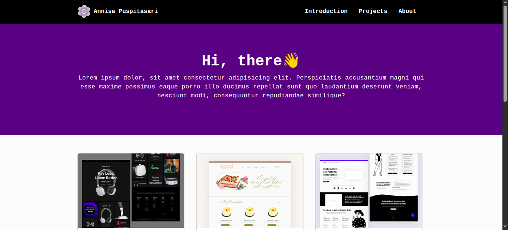
Web Task
A responsive business landing page structured to highlight services, trust elements, and contact conversion flow.
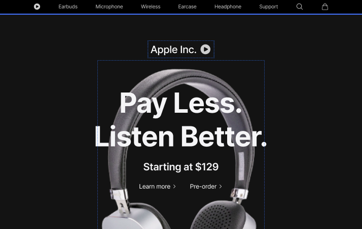
Apple UI Clone
Interface recreation inspired by Apple’s product pages, focusing on typography, spacing systems, and visual hierarchy.
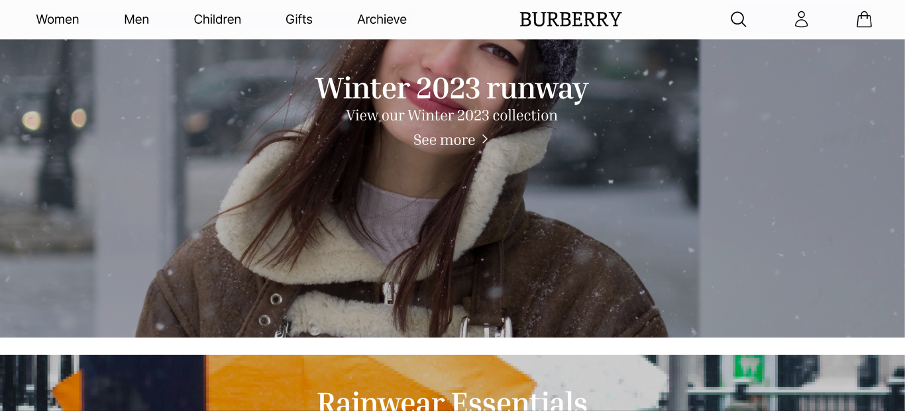
Burberry UI Clone
Interface recreation inspired by Apple’s product pages, focusing on typography, spacing systems, and visual hierarchy.
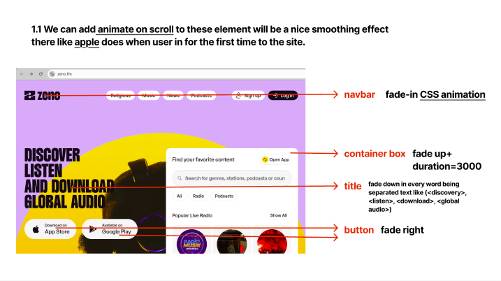
Zeno
Interface recreation inspired by Apple’s product pages, focusing on typography, spacing systems, and visual hierarchy.
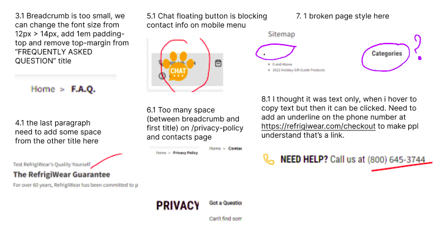
Refrigewear
Interface recreation inspired by Apple’s product pages, focusing on typography, spacing systems, and visual hierarchy.
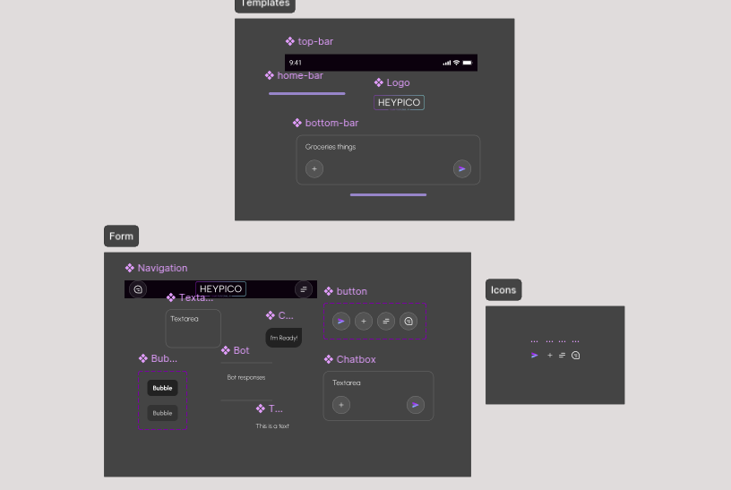
HeyPico
Interface recreation inspired by Apple’s product pages, focusing on typography, spacing systems, and visual hierarchy.

PODC
Designed 8+ high-fidelity screens in Figma for a proposed client project. Full implementation restricted due to NDA limitations.
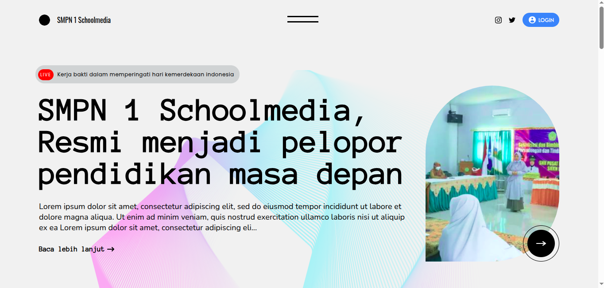
Modern Web Template
A scalable and reusable website template designed with modular layout sections.
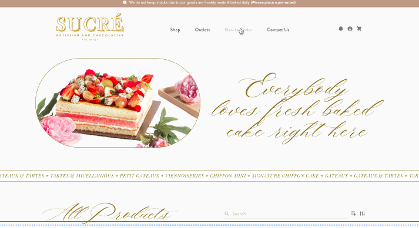
Sucre
Designed a modern prototype focused on layout clarity, structured navigation, and intuitive user flow.
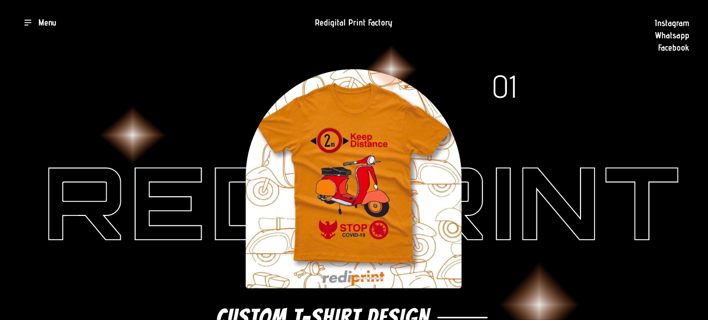
Rediprint
Created a structured and professional website interface design for a printing services business to improve credibility and accessibility.
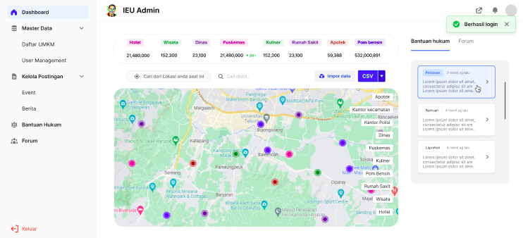
IEU Sahrul Gunawan
Contributed to full UI layout design and interactive prototyping for a digital campaign platform.
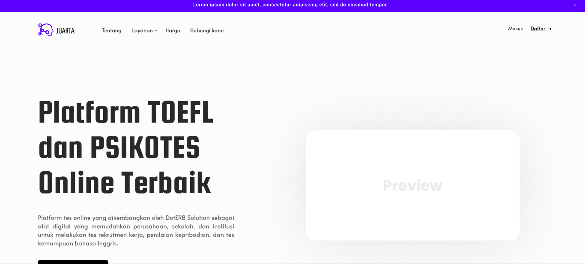
Juarta
Redesigned the interface of a TOEFL preparation platform based on competitor analysis and usability improvements.
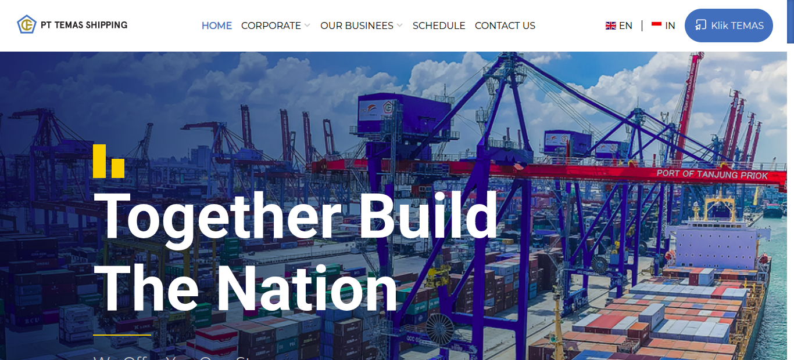
Temasline
Created a demo homepage that won client approval for ongoing collaboration. After the original designer resigned, I designed and built another UI pages (excluding the homepage). Live designs: temasline.com.

InvestX
Developed reusable UI components using React, Sass, and Material UI to support feature expansion.
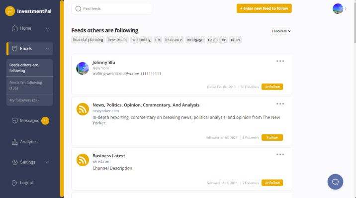
InvestmentPal
I was trusted to handle this project end-to-end, transforming an old Facebook-like table-based structure into the UI shown in the screenshot without rebuilding the system from scratch. There were many technical constraints that other team members considered difficult, but I was able to resolve them efficiently. This project ultimately led to my promotion to a permanent employee at Doterb after completing one year as a contract developer.

Jack Don’t Swim
I’m proud of this project because the client discovered my work on Behance and contacted me directly via WhatsApp. I handled the entire process myself—from research and Figma design to developing the website and deploying it live. I also managed the hosting and domain setup using Domainesia. The project was delivered as a complete end-to-end solution and was priced at IDR 4,000,000. The website is no longer active as the client later migrated to another platform, but this project still represents the effort and work I put into building a full website solution independently.

Malasugi
This project came from the same repeat client as the Jack Don’t Swim project. I handled the full process as well, including research, Figma design, website development, and deployment. The goal was to create a simple, clean, and functional website based on the client’s needs. Although the site is no longer actively used today, it still reflects my ability to deliver a complete website project independently.
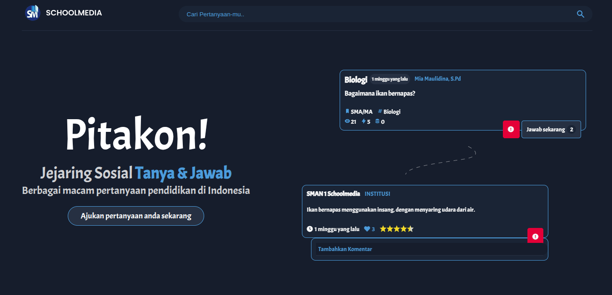
Pitakon
A clean, responsive landing page highlighting key features, user benefits, and onboarding flow.

PN Painan
Built a structured website template inspired by local institutional platforms with emphasis on clarity and hierarchy.

AJK Printing
Developed a service profile website presenting company information, offerings, and contact interface.
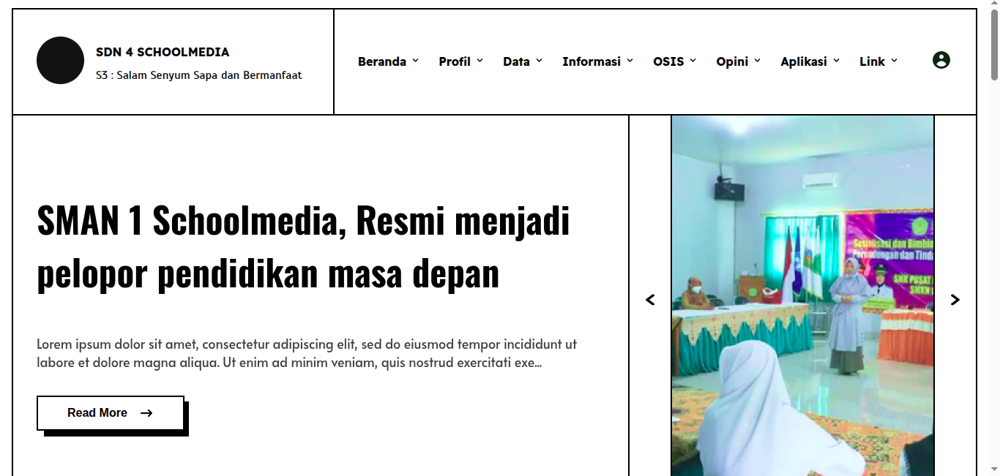
Modern Web Template #2
A general purpose modern-style web template designed with scalable layout and easy customization in mind
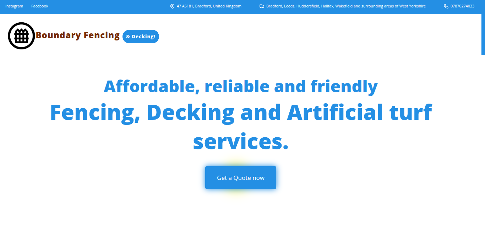
Boundary Fencing
A responsive business landing page structured to highlight services, trust elements, and contact conversion flow.

Discount calculator
Tkinter basics with .pack() layout, padding control, .get() input retrieval, f-string formatting, format specifiers, .config() method, and command= for callback wiring.
 Graphic Design
Graphic Design  Web Development
Web Development  Python
Python  Illustration & Icon Design
Illustration & Icon Design